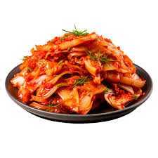

Kimchi

Description
Kimchi is a traditional Korean dish made with fermented vegetables.
Its ingredients can vary, but napa cabbage and Korean radish are common bases.
Kimchi also often includes green onions, ginger, and garlic.
Ingredients
- Cabbage
- Sea salt
- Fish sauce
- Green onions
- Garlic
- White onion
- White sugar
- Ground ginger
- Gochugaru
Steps
- Prep and cut the cabbage
- Rub with salt and seal in airtight bags, then leave at room temperature for six hours.
- Rinse with cold water, drain, and squeeze out the excess liquid.
- Place in a container with a tight fitting lid, then add the remaining ingredients.
- Seal and let sit in a cool, dry place for four days.